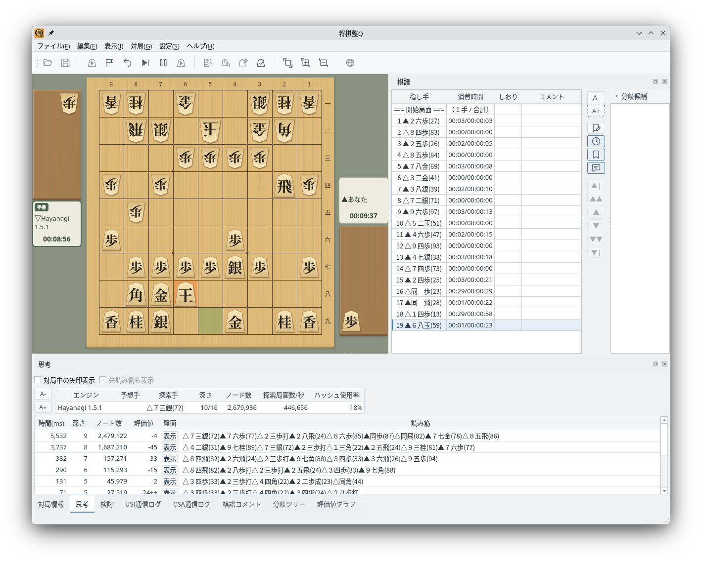
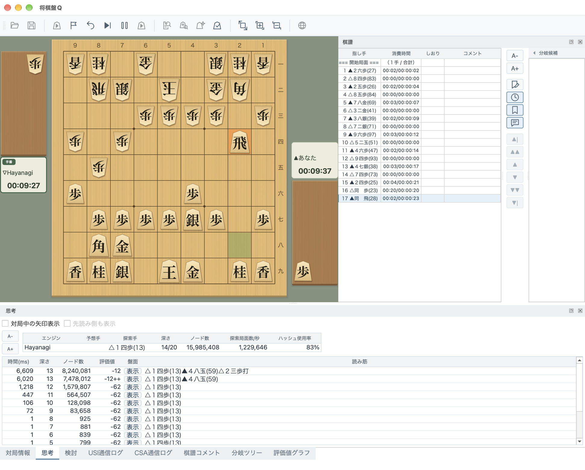
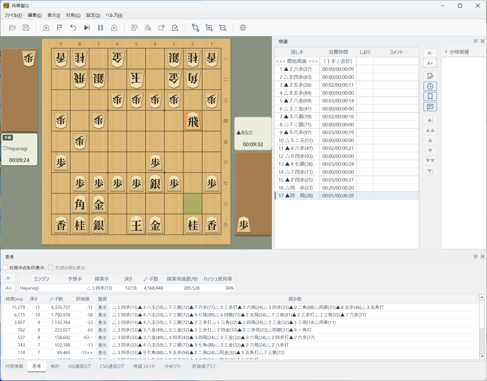

Qt6により単一のソースコードでLinux・macOS・Windowsをサポート
Linux環境でネイティブに動作します
Linux上でShogiBoardQが動作している様子です。KDE PlasmaやGNOMEなど主要なデスクトップ環境で利用できます。画像はKDE Plasmaで、将棋エンジンHayanagiと対局しているところです。

Linux版：KDE Plasma環境での対局画面（Hayanagiが思考中）
GitHub Releaseで公開している ShogiBoardQ-linux.zip には、AppImage・詰将棋問題集（3〜13手詰、計6,000題）・将棋エンジンHayanagiを収録しています。ZIPを展開すれば、問題集とHayanagiをすぐに選べます。対象はx86_64のLinuxです。
ソースからのビルドや配布パッケージの作成手順はLinux ビルド・リリース手順をご覧ください。
macOS環境でネイティブに動作します
macOS上でShogiBoardQが動作している様子です。画像はmacOSで、将棋エンジンHayanagiと対局しているところです。

macOS版：macOSでの対局画面（Hayanagiが思考中）
Windows環境でネイティブに動作します
Windows上でShogiBoardQが動作している様子です。画像はWindows 11で、将棋エンジンHayanagiと対局しているところです。

Windows版：Windows 11での対局画面（Hayanagiが思考中）
Qt6フレームワークの機能により複数OSへの対応を実現しています
ShogiBoardQはQt6フレームワークとC++17で開発されています。Qt6のクロスプラットフォーム機能により、同一のソースコードからLinux・macOS・Windows向けのアプリケーションをビルドできます。
Qt6は各OSのネイティブなスタイルに合わせてUIを描画します。これにより、どのOSでも違和感のない操作感を提供します。
各OSでQt6とCMakeをインストールすれば、同じ手順でビルドできます。